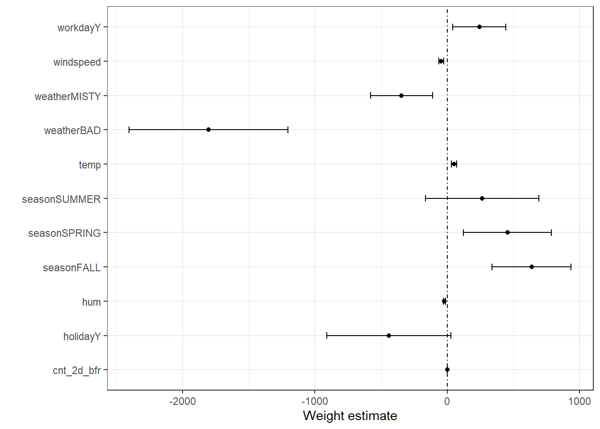
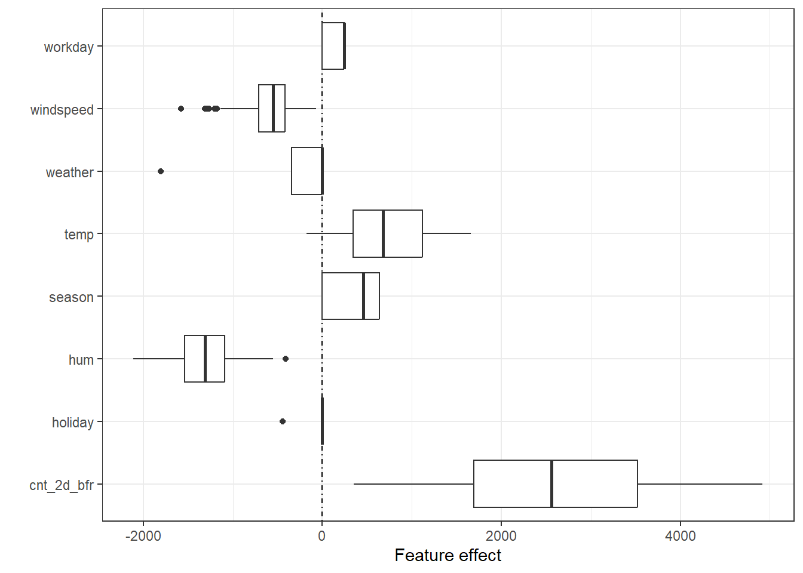
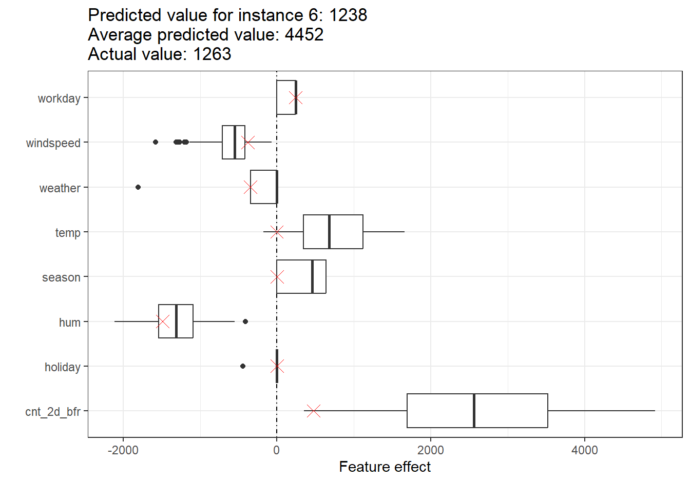
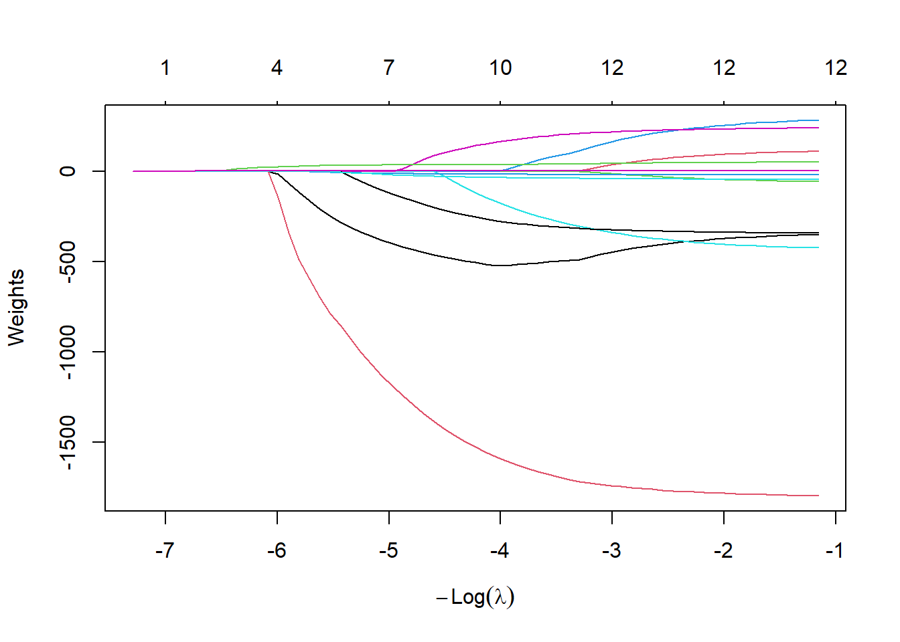

| Weight | SE | |t| | |
|---|---|---|---|
| (Intercept) | 2742.4 | 339.0 | 8.1 |
| seasonSPRING | 454.8 | 169.9 | 2.7 |
| seasonSUMMER | 263.3 | 218.7 | 1.2 |
| seasonFALL | 636.9 | 152.7 | 4.2 |
| holidayY | -441.1 | 239.0 | 1.8 |
| workdayY | 242.0 | 101.9 | 2.4 |
| weatherMISTY | -345.3 | 120.2 | 2.9 |
| weatherBAD | -1804.1 | 306.0 | 5.9 |
| temp | 51.0 | 10.3 | 5.0 |
| hum | -21.7 | 4.5 | 4.8 |
| windspeed | -46.5 | 9.5 | 4.9 |
| cnt_2d_bfr | 0.6 | 0.0 | 19.3 |
Doğrusal Regresyon
Doğrusal regresyon modeli, hedef değişkeni öznitelik girdilerinin ağırlıklı toplamı olarak tahmin eder. Öğrenilen ilişkinin doğrusal olması, yorumlamayı kolaylaştırır. Doğrusal regresyon modelleri; istatistikçiler, bilgisayar bilimciler ve nicel problemlerle uğraşan diğer insanlar tarafından uzun zamandır kullanılmaktadır.
Doğrusal modeller, bir y regresyon hedefinin \(\mathbf{x}\) özniteliklerine bağımlılığını modellemek için kullanılabilir. Öğrenilen ilişkiler, tek bir i örneği için şu şekilde yazılabilir:
\[y=\beta_{0}+\beta_{1}x_{1}+\ldots+\beta_{p}x_{p}+\epsilon\]
Bir örneğin tahmin edilen sonucu, p özniteliğinin ağırlıklı toplamıdır. \(\beta_{j}, j \in 1, \ldots, p\) betaları, öğrenilen öznitelik ağırlıklarını ya da katsayılarını temsil eder. Toplamdaki ilk ağırlık olan \(\beta_0\), sabit terim (kesişim) olarak adlandırılır ve herhangi bir öznitelikle çarpılmaz. Epsilon \(\epsilon\) ise hâlâ yaptığımız hatadır, yani tahmin ile gerçek sonuç arasındaki farktır.1 Bu hataların Gauss (normal) dağılımına uyduğu varsayılır; bu da hem negatif hem pozitif yönde hata yaptığımız, çok sayıda küçük ve az sayıda büyük hata yaptığımız anlamına gelir.
En iyi katsayıyı bulmak için genellikle gerçek sonuçlar ile kestirilen sonuçlar arasındaki farkların karelerini en aza indiririz:
\[\hat{\boldsymbol{\beta}} = \arg\!\min_{\beta_0, \ldots, \beta_p} \sum_{i=1}^n \left( y^{(i)} - \left( \beta_0 + \sum_{j=1}^p \beta_j x^{(i)}_{j} \right) \right)^{2}\]
Optimal ağırlıkların nasıl bulunabileceğini ayrıntılı olarak ele almayacağız; ancak ilgileniyorsanız “The Elements of Statistical Learning” kitabının 3.2 bölümünü (Hastie vd. 2009) ya da doğrusal regresyon modelleri üzerine diğer çevrimiçi kaynaklardan birini okuyabilirsiniz.
Doğrusal regresyon modellerinin en büyük avantajı doğrusallıktır: Doğrusallık kestirim sürecini basitleştirir ve en önemlisi, bu doğrusal denklemlerin modüler düzeyde (yani ağırlıklar düzeyinde) anlaşılması kolay bir yorumu vardır. Bu, doğrusal modelin ve benzer tüm modellerin tıp, sosyoloji, psikoloji ve diğer pek çok nicel araştırma alanı gibi akademik alanlarda bu kadar yaygın olmasının temel nedenlerinden biridir. Örneğin tıp alanında yalnızca bir hastanın klinik sonucunu tahmin etmek değil, aynı zamanda ilacın etkisini sayısallaştırmak ve bunu yaparken cinsiyet, yaş ve diğer öznitelikleri yorumlanabilir bir şekilde hesaba katmak da önemlidir.
Kestirilen ağırlıklar güven aralıklarıyla birlikte gelir. Güven aralığı, ağırlık kestirimi için “gerçek” ağırlığı belirli bir güvenle kapsayan bir aralıktır. Örneğin 2 değerindeki bir ağırlık için %95 güven aralığı 1 ile 3 arasında olabilir. Bu aralığın yorumu şöyle olur: Doğrusal regresyon modelinin veri için doğru model olması koşuluyla, kestirimi yeni örneklenmiş verilerle 100 kez tekrarlasaydık, güven aralığı 100 durumun 95’inde gerçek ağırlığı içerirdi.
Modelin “doğru” model olup olmadığı, verideki ilişkilerin belirli varsayımları karşılayıp karşılamadığına bağlıdır. Bu varsayımlar doğrusallık, normallik, eş varyanslılık (homoskedastisite), bağımsızlık, sabit öznitelikler ve çoklu bağlantının (multicollinearity) olmamasıdır.
İpucuVarsayımlar isteğe bağlıdır.
Varsayımlara yalnızca doğrusal modelden güven aralıkları gibi ek çıkarımlar elde etmek için ihtiyaç duyarsınız.
Doğrusallık
Doğrusal regresyon modeli, tahmini özniteliklerin doğrusal bir bileşimi olmaya zorlar; bu hem en büyük gücü hem de en büyük sınırlılığıdır. Doğrusallık, yorumlanabilir modellere yol açar. Doğrusal etkileri sayısallaştırmak ve betimlemek kolaydır. Toplamsaldırlar, dolayısıyla etkileri birbirinden ayırmak kolaydır. Öznitelik etkileşimlerinden ya da bir özniteliğin hedef değerle doğrusal olmayan bir ilişkisinden şüpheleniyorsanız, etkileşim terimleri ekleyebilir ya da regresyon spline’ları kullanabilirsiniz.
Normallik
Özniteliklere koşullu hedef sonucun normal dağılıma uyduğu varsayılır. Bu varsayım ihlal edilirse, öznitelik ağırlıklarının kestirilen güven aralıkları geçersiz olur.
Eş varyanslılık (sabit varyans)
Hata terimlerinin varyansının tüm öznitelik uzayı boyunca sabit olduğu varsayılır. Bir evin değerini metrekare cinsinden yaşam alanına göre tahmin etmek istediğinizi düşünün. Evin büyüklüğünden bağımsız olarak, tahmin edilen yanıt etrafındaki hatanın aynı varyansa sahip olduğunu varsayan bir doğrusal model kestiriyorsunuz. Bu varsayım gerçekte sıklıkla ihlal edilir. Ev örneğinde, tahmin edilen fiyat etrafındaki hata terimlerinin varyansının daha büyük evlerde daha yüksek olması akla yatkındır; çünkü fiyatlar yükseldikçe fiyat dalgalanmalarına daha fazla alan vardır. Doğrusal regresyon modelinizdeki ortalama hatanın (tahmin edilen ile gerçek fiyat arasındaki fark) 50.000 Euro olduğunu varsayalım. Eş varyanslılığı varsayarsanız, 50.000’lik ortalama hatanın 1 milyonluk evler için de, yalnızca 40.000’lik evler için de aynı olduğunu varsaymış olursunuz. Bu makul değildir, çünkü negatif ev fiyatları bekleyebileceğimiz anlamına gelir.
Bağımsızlık
Her örneğin diğer tüm örneklerden bağımsız olduğu varsayılır.
Hasta başına birden fazla kan testi gibi tekrarlı ölçümler yapıyorsanız, veri noktaları bağımsız değildir. Bağımlı veriler için karma etkiler modelleri (mixed effect models) ya da GEE’ler (genelleştirilmiş kestirim denklemleri) gibi özel doğrusal regresyon modellerine ihtiyacınız vardır.
“Olağan” doğrusal regresyon modelini kullanırsanız, modelden yanlış sonuçlar çıkarabilirsiniz.
Sabit öznitelikler
Girdi özniteliklerinin “sabit” olduğu kabul edilir. Sabit olmaları, istatistiksel değişkenler olarak değil, “verili sabitler” olarak ele alındıkları anlamına gelir. Bu da ölçüm hatası içermedikleri anlamına gelir. Bu oldukça gerçekçi olmayan bir varsayımdır. Ancak bu varsayım olmadan, girdi özniteliklerinizin ölçüm hatalarını hesaba katan çok karmaşık ölçüm hatası modelleri uydurmanız gerekirdi. Ve genellikle bunu yapmak istemezsiniz.
Çoklu bağlantının olmaması
Güçlü biçimde korelasyonlu öznitelikler istemezsiniz, çünkü bu ağırlıkların kestirimini bozar. İki özniteliğin güçlü biçimde korelasyonlu olduğu bir durumda ağırlıkları kestirmek sorunlu hâle gelir; çünkü öznitelik etkileri toplamsaldır ve etkilerin korelasyonlu özniteliklerden hangisine atfedileceği belirlenemez olur.
Yorumlama
Doğrusal regresyon modelindeki bir ağırlığın yorumu, ilgili özniteliğin türüne bağlıdır.
- Sayısal öznitelik: Sayısal özniteliği bir birim artırmak, kestirilen sonucu ağırlığı kadar değiştirir. Sayısal özniteliğe bir örnek, bir evin büyüklüğüdür.
- İkili öznitelik: Her örnek için iki olası değerden birini alan özniteliktir. Bir örnek “Evin bahçesi var” özniteliğidir. Değerlerden biri, örneğin “Bahçe yok”, referans kategori olarak kabul edilir (bazı programlama dillerinde 0 ile kodlanır). Özniteliği referans kategoriden diğer kategoriye değiştirmek, kestirilen sonucu özniteliğin ağırlığı kadar değiştirir.
- Birden çok kategorisi olan kategorik öznitelik: Sabit sayıda olası değeri olan özniteliktir. Bir örnek, “halı”, “laminat” ve “parke” olası kategorilerine sahip “zemin türü” özniteliğidir. Çok sayıda kategoriyle başa çıkmanın bir yolu one-hot kodlamadır (one-hot encoding); yani her kategorinin kendi ikili sütunu olur. L kategorili bir kategorik öznitelik için yalnızca L-1 sütuna ihtiyacınız vardır, çünkü L’inci sütun gereksiz (tekrarlı) bilgi taşır. Örneğin bir örnek için 1’den L-1’e kadar olan sütunların hepsi 0 değerine sahipse, bu örneğin kategorik özniteliğinin L kategorisinde olduğunu biliriz. Bu durumda her kategorinin yorumu, ikili özniteliklerin yorumuyla aynıdır. R gibi bazı diller, bu bölümün ilerleyen kısmında açıklandığı gibi, kategorik öznitelikleri çeşitli şekillerde kodlamanıza olanak tanır.
- Sabit terim \(\beta_0\): Sabit terim, tüm örnekler için her zaman 1 olan “sabit öznitelik” için öznitelik ağırlığıdır. Çoğu yazılım paketi, sabit terimi kestirmek için bu “1” özniteliğini otomatik olarak ekler. Yorumu şöyledir: Tüm sayısal öznitelik değerleri sıfırda ve kategorik öznitelik değerleri referans kategorilerde olan bir örnek için model tahmini, sabit terim ağırlığıdır. Sabit terimin yorumu genellikle önemli değildir, çünkü tüm öznitelik değerleri sıfır olan örnekler çoğu zaman anlamsızdır. Yorum ancak öznitelikler standartlaştırılmışsa (ortalaması sıfır, standart sapması bir) anlamlıdır. Bu durumda sabit terim, tüm özniteliklerin ortalama değerlerinde olduğu bir örneğin tahmin edilen sonucunu yansıtır.
Doğrusal regresyon modelindeki özniteliklerin yorumu, aşağıdaki metin şablonları kullanılarak otomatikleştirilebilir.
NotYorumlama
- Sayısal öznitelik: Diğer tüm öznitelik değerleri sabit kaldığında, \(x_j\) özniteliğindeki bir birimlik artış \(y\) tahminini \(\beta_j\) birim artırır.
- Kategorik öznitelik: Diğer tüm öznitelikler sabit kaldığında, \(x_j\) özniteliğini referans kategoriden diğer kategoriye değiştirmek y tahminini \(\beta_j\) kadar artırır.
Doğrusal modelleri yorumlamak için bir diğer önemli ölçü R-kare ölçüsüdür. R-kare, hedef sonucunuzun toplam varyansının ne kadarının model tarafından açıklandığını söyler. R-kare ne kadar yüksekse, modeliniz veriyi o kadar iyi açıklar. R-kareyi hesaplama formülü şöyledir:
\[R^2=1-\frac{SSE}{SST}\]
SSE, hata terimlerinin kareler toplamıdır:
\[SSE = \sum_{i=1}^n (y^{(i)} - \hat{y}^{(i)})^2\]
SST, veri varyansının kareler toplamıdır:
\[SST = \sum_{i=1}^n (y^{(i)} - \bar{y})^2\]
SSE, doğrusal model uydurulduktan sonra ne kadar varyansın kaldığını söyler; bu, tahmin edilen ve gerçek hedef değerler arasındaki farkların kareleriyle ölçülür. SST ise hedef sonucun toplam varyansıdır. R-kare, varyansınızın ne kadarının doğrusal model tarafından açıklanabildiğini söyler. R-kare genellikle, modelin veriyi hiç açıklamadığı durumda 0 ile verideki tüm varyansı açıkladığı durumda 1 arasında değişir. R-karenin herhangi bir matematiksel kuralı ihlal etmeden negatif bir değer alması da mümkündür. Bu, SSE’nin SST’den büyük olduğu durumda gerçekleşir; bu da modelin verideki eğilimi yakalayamadığı ve veriye, hedefin ortalamasını tahmin olarak kullanmaktan daha kötü uyduğu anlamına gelir.
Burada bir püf nokta var: R-kare, hedef değer hakkında hiçbir bilgi içermeseler bile modeldeki öznitelik sayısı arttıkça artar. Bu nedenle, modelde kullanılan öznitelik sayısını hesaba katan düzeltilmiş R-kareyi kullanmak daha iyidir. Hesaplanışı şöyledir:
\[\bar{R}^2 = 1 - (1 - R^2) \frac{n - 1}{n - p - 1}\]
Burada \(p\) öznitelik sayısı, \(n\) ise örnek sayısıdır.
(Düzeltilmiş) R-karesi çok düşük olan bir modeli yorumlamak anlamlı değildir, çünkü böyle bir model temelde varyansın büyük kısmını açıklamaz. Ağırlıkların herhangi bir yorumu anlamlı olmaz.
Öznitelik Önemi
Doğrusal regresyon modelindeki bir özniteliğin önemi, t-istatistiğinin mutlak değeriyle ölçülebilir. t-istatistiği, standart hatasıyla ölçeklendirilmiş kestirilen ağırlıktır.
\[t_{\hat{\beta}_j}=\frac{\hat{\beta}_j}{SE(\hat{\beta}_j)}\]
Bu formülün bize ne söylediğini inceleyelim: Bir özniteliğin önemi, ağırlık arttıkça artar. Bu mantıklıdır. Kestirilen ağırlığın varyansı ne kadar fazlaysa (= doğru değerden ne kadar az eminsek), öznitelik o kadar az önemlidir. Bu da mantıklıdır.
Örnek
Bu örnekte, belirli bir gündeki kiralanan bisiklet sayısını hava durumu ve takvim bilgilerine göre tahmin etmek için doğrusal regresyon modelini kullanıyoruz. Yorumlama için kestirilen regresyon ağırlıklarını inceliyoruz. Öznitelikler sayısal ve kategorik özniteliklerden oluşmaktadır. Tablo 1, her öznitelik için kestirilen ağırlığı, kestirimin standart hatasını ve t-istatistiğinin mutlak değerini göstermektedir.
Sayısal bir özniteliğin (temp) yorumu: Diğer tüm öznitelikler sabit kaldığında, sıcaklıktaki 1 santigrat derecelik artış tahmin edilen bisiklet sayısını 51.0 artırır.
Kategorik bir özniteliğin (weather) yorumu: Hava kötü olduğunda (yağmurlu, karlı ya da fırtınalı), iyi havaya kıyasla kestirilen bisiklet sayısı -1804.1 daha düşüktür; yine diğer tüm özniteliklerin değişmediği varsayımıyla. Hava sisli olduğunda, diğer tüm öznitelikler aynı kalmak koşuluyla, tahmin edilen bisiklet sayısı iyi havaya kıyasla -345.3 daha düşüktür.
Doğrusal regresyon modellerinin doğası gereği, tüm yorumlar her zaman “diğer tüm öznitelikler aynı kalmak koşuluyla” dipnotuyla birlikte gelir. Tahmin edilen hedef, ağırlıklandırılmış özniteliklerin doğrusal bir bileşimidir. Kestirilen doğrusal denklem, öznitelik/hedef uzayında bir hiperdüzlemdir (tek bir öznitelik durumunda basit bir doğru). Ağırlıklar, hiperdüzlemin her yöndeki eğimini (gradyanını) belirtir. İşin iyi tarafı, toplamsallığın tek bir öznitelik etkisinin yorumunu diğer tüm özniteliklerden yalıtmasıdır. Bu mümkündür, çünkü denklemdeki tüm öznitelik etkileri (= ağırlık çarpı öznitelik değeri) bir artı işaretiyle birleştirilir. İşin kötü tarafı ise yorumun özniteliklerin ortak dağılımını göz ardı etmesidir. Bir özniteliği artırıp diğerini değiştirmemek, gerçekçi olmayan ya da en azından olası olmayan veri noktalarına yol açabilir. Örneğin bir evin oda sayısını, büyüklüğünü de artırmadan artırmak gerçekçi olmayabilir.
Ağırlık ve etki grafiği
Ağırlık grafiği ve etki grafiği gibi görselleştirmeler, doğrusal regresyon modelinin insanlar tarafından kolay ve hızlı bir şekilde kavranmasını sağlar.
Ağırlık grafiği
Ağırlık tablosundaki bilgiler (ağırlık ve varyans kestirimleri) bir ağırlık grafiğinde görselleştirilebilir. Şekil 1, önceki doğrusal regresyon modelinin sonuçlarını göstermektedir.

Ağırlık grafiği, kötü havanın tahmin edilen bisiklet sayısı üzerinde güçlü bir negatif etkisi olduğunu göstermektedir. Yaz mevsiminin ağırlığı pozitiftir, ancak %95 güven aralığı 0’ı içerir; dolayısıyla diğer tüm öznitelikler verildiğinde yaz ile kış arasında anlamlı bir fark yoktur. Model sıcaklığı hesaba kattığından, yaz katsayısı yazın ek etkisiyle ilgilidir. Bazı güven aralıkları çok kısadır ve kestirimler sıfıra yakındır, yine de öznitelik etkileri istatistiksel olarak anlamlıdır. Sıcaklık bu adaylardan biridir. Ağırlık grafiğinin sorunu, özniteliklerin farklı ölçeklerde ölçülmesidir. Hava durumu için kestirilen ağırlık iyi ve kötü hava arasındaki farkı yansıtırken, sıcaklık için yalnızca 1 santigrat derecelik bir artışı yansıtır. Doğrusal modeli uydurmadan önce öznitelikleri ölçeklendirerek (ortalaması sıfır, standart sapması bir) kestirilen ağırlıkları daha karşılaştırılabilir hâle getirebilirsiniz.
UyarıFarklı ölçeklerdeki özniteliklerin ağırlıklarını karşılaştırmayın
Bir özniteliğin ölçüldüğü birim, katsayıların/ağırlıkların büyüklüğünü etkiler. Örneğin kilogramdan grama dönüştürürken olduğu gibi bir özniteliği 1000 ile çarparsanız, yeni katsayı 1/1000 oranında küçülür.
Etki grafiği
Doğrusal regresyon modelinin ağırlıkları, gerçek öznitelik değerleriyle çarpıldıklarında daha anlamlı bir şekilde analiz edilebilir. Ağırlıklar özniteliklerin ölçeğine bağlıdır; örneğin bir kişinin boyunu ölçen bir özniteliğiniz varsa ve metreden santimetreye geçerseniz ağırlık farklı olacaktır. Ağırlık değişir, ancak verinizdeki gerçek etkiler değişmez. Özniteliğinizin verideki dağılımını bilmek de önemlidir; çünkü varyans çok düşükse, bu neredeyse tüm örneklerin bu öznitelikten benzer katkılar aldığı anlamına gelir. Etki grafiği, ağırlık ve öznitelik bileşiminin verinizdeki tahminlere ne kadar katkıda bulunduğunu anlamanıza yardımcı olabilir. İşe etkileri hesaplayarak başlayın; etki, öznitelik başına ağırlık ile bir örneğin öznitelik değerinin çarpımıdır:
\[\text{effect}_{j}^{(i)} = w_{j} x^{(i)}_j\]
Etkiler, kutu grafikleriyle (boxplot) görselleştirilebilir (bkz. Şekil 2). Kutu grafiğindeki kutu, verinin yarısı için etki aralığını (%25 ile %75 etki çeyreklikleri) içerir. Kutudaki dikey çizgi medyan etkidir; yani örneklerin %50’si tahmin üzerinde daha düşük, diğer yarısı daha yüksek bir etkiye sahiptir. Noktalar aykırı değerlerdir; üçüncü çeyrekliğin 1,5 * IQR (çeyrekler açıklığı, yani birinci ve üçüncü çeyreklikler arasındaki fark) kadar üstünde ya da birinci çeyrekliğin 1,5 * IQR kadar altında kalan noktalar olarak tanımlanırlar. Alt ve üst bıyık olarak adlandırılan iki yatay çizgi, birinci çeyrekliğin altında ve üçüncü çeyrekliğin üstünde kalan, aykırı olmayan noktaları birleştirir. Aykırı değer yoksa bıyıklar minimum ve maksimum değerlere kadar uzanır.
Her kategorinin kendi satırının olduğu ağırlık grafiğinin aksine, kategorik öznitelik etkileri tek bir kutu grafiğinde özetlenebilir.

Beklenen kiralık bisiklet sayısına en büyük katkılar sıcaklık özniteliğinden ve önceki bisiklet sayısından gelmektedir. Sıcaklığın tahmine katkısı geniş bir aralıkta değişir. Sayı özniteliği sıfırdan büyük pozitif katkılara kadar uzanır. Negatif ağırlığa sahip etkilerde, pozitif etkiye sahip örnekler negatif öznitelik değerine sahip olanlardır. Örneğin rüzgâr hızının yüksek negatif etkiye sahip olduğu günler, rüzgâr hızının yüksek olduğu günlerdir.
Tekil tahminleri etki grafikleriyle açıklama
Bir örneğin her bir özniteliği tahmine ne kadar katkıda bulundu? Bu soru, o örnek için etkiler hesaplanarak yanıtlanabilir. Örneğe özgü etkilerin yorumu ancak her özniteliğin etki dağılımıyla karşılaştırıldığında anlamlıdır. Bisiklet veri setindeki 6. örnek için doğrusal modelin tahminini açıklamak istiyoruz. Bu örneğin öznitelik değerleri aşağıda gösterilmektedir (bkz. Tablo 2).
| Feature | Value |
|---|---|
| season | WINTER |
| holiday | N |
| workday | Y |
| weather | MISTY |
| temp | -0.052723 |
| hum | 68.6364 |
| windspeed | 8.182844 |
| cnt_2d_bfr | 822 |
| cnt | 1263 |
Bu örneğin öznitelik etkilerini elde etmek için öznitelik değerlerini doğrusal regresyon modelindeki ilgili ağırlıklarla çarpmamız gerekir. -0.05 santigrat derecelik bir sıcaklık için etki -0.05 \(\cdot\) 51.01 \(=\) -2.69 olur. Bu tekil etkileri, verideki etkilerin dağılımını gösteren etki grafiğine çarpı işaretleri olarak ekliyoruz (bkz. Şekil 3). Bu, tekil etkileri verideki etki dağılımıyla karşılaştırmamızı sağlar.
Test verisi örnekleri için tahminlerin ortalamasını alırsak, 4452 ortalamasını elde ederiz. Buna kıyasla 6. örneğin tahmini düşüktür, çünkü yalnızca 1238 bisiklet kiralaması tahmin edilmektedir. Etki grafiği bunun nedenini ortaya koyar. Kutu grafikleri veri setindeki tüm örnekler için etkilerin dağılımlarını, çarpı işaretleri ise 6. örneğin etkilerini gösterir. 6. örneğin sıcaklık etkisi düşüktür, çünkü o gün sıcaklık 0 dereceydi ve bu diğer günlerin çoğuna kıyasla düşüktür (sıcaklık özniteliğinin ağırlığının pozitif olduğunu hatırlayın). Ayrıca cnt_2d_bfr özniteliğinin etkisi diğer veri örneklerine kıyasla küçüktür, çünkü 2011’in başlarında daha az bisiklet kiralanmıştır.

Kategorik özniteliklerin kodlanması
Kategorik bir özniteliği kodlamanın birkaç yolu vardır ve bu seçim ağırlıkların yorumunu etkiler. Doğrusal regresyon modellerinde standart olan, çoğu durumda yeterli olan treatment kodlamadır (işlem kodlama). Farklı kodlamalar kullanmak, özünde kategorik özniteliği içeren tek bir sütundan farklı (tasarım) matrisleri oluşturmak demektir. Bu bölüm üç farklı kodlamayı sunmaktadır, ancak çok daha fazlası vardır. Aşağıdaki örnekte dört örnek ve üç kategorili bir kategorik öznitelik bulunmaktadır. İlk iki örnekte öznitelik A kategorisini; üçüncü örnekte B kategorisini; son örnekte ise C kategorisini alır. Dolayısıyla vektörümüz şöyle görünür:
\[\begin{pmatrix}A\\A\\B\\C\\\end{pmatrix}\]
Treatment kodlama
Treatment kodlamada, kategori başına ağırlık, ilgili kategori ile referans kategori arasındaki tahminde kestirilen farktır. Doğrusal modelin sabit terimi, referans kategorinin ortalamasıdır (diğer tüm öznitelikler aynı kaldığında). Tasarım matrisinin ilk sütunu, her zaman 1 olan sabit terimdir. İkinci sütun i örneğinin B kategorisinde olup olmadığını, üçüncü sütun ise C kategorisinde olup olmadığını gösterir. A kategorisi için bir sütuna gerek yoktur; çünkü o durumda doğrusal denklem aşırı belirlenmiş olur ve ağırlıklar için tek bir çözüm bulunamaz. Bir örneğin ne B ne de C kategorisinde olduğunu bilmek yeterlidir.
\[\begin{pmatrix}A\\A\\B\\C\\\end{pmatrix} \Rightarrow \begin{pmatrix}1&0&0\\1&0&0\\1&1&0\\1&0&1\\\end{pmatrix}\]
Etki kodlama
Etki kodlamada (effect coding), kategori başına ağırlık, ilgili kategoriden genel ortalamaya olan kestirilen y farkıdır (diğer tüm özniteliklerin sıfır ya da referans kategoride olması koşuluyla). İlk sütun sabit terimi kestirmek için kullanılır. Sabit terimle ilişkili \(\beta_{0}\) ağırlığı genel ortalamayı temsil eder; ikinci sütunun ağırlığı olan \(\beta_{1}\) ise genel ortalama ile B kategorisi arasındaki farktır. B kategorisinin toplam etkisi \(\beta_{0}+\beta_{1}\)’dir. C kategorisinin yorumu da buna denktir. Referans kategori A için \(-(\beta_{1}+\beta_{2})\) genel ortalamaya olan farkı, \(\beta_{0}-(\beta_{1}+\beta_{2})\) ise toplam etkiyi verir.
\[ \begin{pmatrix}A\\A\\B\\C\\\end{pmatrix} \Rightarrow \begin{pmatrix}1&-1&-1\\1&-1&-1\\1&1&0\\1&0&1\\\end{pmatrix}\]
Kukla kodlama
Kukla kodlamada (dummy coding) kategori başına \(\boldsymbol{\beta}\), her kategori için \(\mathbf{y}\)’nin kestirilen ortalama değeridir (diğer tüm öznitelik değerlerinin sıfır ya da referans kategoride olması koşuluyla). Doğrusal model ağırlıkları için tek bir çözüm bulunabilmesi amacıyla burada sabit terimin çıkarıldığına dikkat edin. Bu çoklu bağlantı sorununu hafifletmenin bir başka yolu da kategorilerden birini dışarıda bırakmaktır.
\[ \begin{pmatrix}A\\A\\B\\C\\\end{pmatrix} \Rightarrow \begin{pmatrix}1&0&0\\1&0&0\\0&1&0\\0&0&1\\\end{pmatrix}\]
Kategorik özniteliklerin farklı kodlamalarına biraz daha derinlemesine dalmak isterseniz bu genel bakış sayfasına ve bu blog yazısına göz atın.
Seyrek doğrusal modeller
Seçtiğim doğrusal model örneklerinin hepsi hoş ve düzenli görünüyor, değil mi? Ancak gerçekte yalnızca bir avuç özniteliğiniz değil, yüzlerce ya da binlerce özniteliğiniz olabilir. Peki ya doğrusal regresyon modelleriniz? Yorumlanabilirlik yokuş aşağı gider. Hatta öznitelik sayısının örnek sayısından fazla olduğu ve standart bir doğrusal modeli hiç uyduramadığınız bir durumla bile karşılaşabilirsiniz. İyi haber şu ki doğrusal modellere seyreklik (= az sayıda öznitelik) kazandırmanın yolları vardır.
Lasso
Lasso, doğrusal regresyon modeline seyreklik kazandırmanın otomatik ve kullanışlı bir yoludur. Lasso, “least absolute shrinkage and selection operator” (en küçük mutlak büzülme ve seçim operatörü) ifadesinin kısaltmasıdır ve bir doğrusal regresyon modelinde uygulandığında hem öznitelik seçimi hem de seçilen öznitelik ağırlıklarının düzenlileştirilmesini (regularization) gerçekleştirir. Ağırlıkların optimize ettiği minimizasyon problemini ele alalım:
\[\min_{\boldsymbol{\beta}}\left(\frac{1}{n}\sum_{i=1}^n(y^{(i)} - \mathbf{x}^{(i) T} \boldsymbol{\beta})^2\right)\]
Lasso bu optimizasyon problemine bir terim ekler.
\[\min_{\boldsymbol{\beta}}\left(\frac{1}{n}\sum_{i=1}^n(y^{(i)} - \mathbf{x}^{(i) T} \boldsymbol{\beta})^2 + \lambda ||\boldsymbol{\beta}||_1\right)\]
Öznitelik vektörünün L1-normu olan \(||\boldsymbol{\beta}||_1\) terimi, büyük ağırlıkların cezalandırılmasına yol açar. L1-normu kullanıldığı için ağırlıkların çoğu 0 kestirimi alır, diğerleri ise büzülür (küçültülür). \(\lambda\) parametresi düzenlileştirme etkisinin gücünü kontrol eder ve genellikle çapraz doğrulama ile ayarlanır. Özellikle \(\lambda\) büyük olduğunda pek çok ağırlık 0 olur. Öznitelik ağırlıkları, ceza terimi \(\lambda\)’nın bir fonksiyonu olarak görselleştirilebilir. Şekil 4 içinde her öznitelik ağırlığı bir eğriyle temsil edilmektedir. Ağırlıklar üzerindeki ceza arttıkça, giderek daha az öznitelik sıfırdan farklı bir ağırlık kestirimi alır. Bu eğrilere düzenlileştirme yolları (regularization paths) da denir.

\(\lambda\) için hangi değeri seçmeliyiz? Ceza terimini bir ayar parametresi (hiperparametre) olarak görürseniz, çapraz doğrulama ile model hatasını en aza indiren \(\lambda\)’yı bulabilirsiniz. \(\lambda\)’yı modelin yorumlanabilirliğini kontrol eden bir parametre olarak da düşünebilirsiniz. Ceza ne kadar büyükse modelde o kadar az öznitelik bulunur (çünkü ağırlıkları sıfırdır) ve model o kadar iyi yorumlanabilir.
Lasso ile örnek
Lasso kullanarak bisiklet kiralamalarını tahmin edeceğiz. Modelde bulunmasını istediğimiz öznitelik sayısını önceden belirliyoruz. Önce bu sayıyı 2 öznitelik olarak belirleyelim; sonuçlar için bkz. Tablo 3.
| Weight | |
|---|---|
| seasonWINTER | 0.00 |
| seasonSPRING | 0.00 |
| seasonSUMMER | 0.00 |
| seasonFALL | 0.00 |
| holidayY | 0.00 |
| workdayY | 0.00 |
| weatherMISTY | 0.00 |
| weatherBAD | 0.00 |
| temp | 22.45 |
| hum | 0.00 |
| windspeed | 0.00 |
| cnt_2d_bfr | 0.48 |
Lasso yolunda sıfırdan farklı ağırlık alan ilk iki öznitelik sıcaklık (temp) ve önceki sayımdır (cnt_2d_bfr). Şimdi 5 öznitelik seçelim. Sonuçlar için bkz. Tablo 4. “temp” ve “cnt_2d_bfr” ağırlıklarının iki öznitelikli modeldekilerden farklı olduğuna dikkat edin. Bunun nedeni, \(\lambda\) azaltıldığında modelde zaten “içeride” olan özniteliklerin de daha az cezalandırılması ve mutlak değerce daha büyük bir ağırlık alabilmesidir. Lasso ağırlıklarının yorumu, doğrusal regresyon modelindeki ağırlıkların yorumuna karşılık gelir. Yalnızca özniteliklerin standartlaştırılıp standartlaştırılmadığına dikkat etmeniz gerekir, çünkü bu ağırlıkları etkiler. Bu örnekte öznitelikler yazılım tarafından standartlaştırılmış, ancak ağırlıklar orijinal öznitelik ölçekleriyle eşleşecek şekilde bizim için otomatik olarak geri dönüştürülmüştür.
| Weight | |
|---|---|
| seasonWINTER | -249.37 |
| seasonSPRING | 0.00 |
| seasonSUMMER | 0.00 |
| seasonFALL | 0.00 |
| holidayY | 0.00 |
| workdayY | 0.00 |
| weatherMISTY | 0.00 |
| weatherBAD | -789.74 |
| temp | 31.14 |
| hum | -6.47 |
| windspeed | 0.00 |
| cnt_2d_bfr | 0.53 |
Doğrusal modellerde seyreklik için diğer yöntemler
Bir doğrusal modeldeki öznitelik sayısını azaltmak için geniş bir yöntem yelpazesi kullanılabilir.
Ön işleme yöntemleri:
- Elle seçilen öznitelikler: Bazı öznitelikleri seçmek ya da çıkarmak için her zaman uzman bilgisinden yararlanabilirsiniz. Büyük dezavantajı otomatikleştirilememesi ve veriyi anlayan birine erişiminizin olması gerekmesidir.
- Tek değişkenli seçim: Bir örnek korelasyon katsayısıdır. Yalnızca öznitelik ile hedef arasındaki korelasyonun belirli bir eşiği aştığı öznitelikleri dikkate alırsınız. Dezavantajı, öznitelikleri yalnızca tek tek ele almasıdır. Bazı öznitelikler, doğrusal model başka bazı öznitelikleri hesaba katana kadar bir korelasyon göstermeyebilir. Tek değişkenli seçim yöntemleriyle bu öznitelikleri kaçırırsınız.
Adımsal yöntemler:
- İleri doğru seçim: Doğrusal modeli tek bir öznitelikle uydurun. Bunu her öznitelik için yapın. En iyi çalışan modeli seçin (örneğin en yüksek R-kareye sahip olanı). Şimdi de kalan öznitelikler için, her bir özniteliği mevcut en iyi modelinize ekleyerek modelinizin farklı sürümlerini uydurun. En iyi performansı göstereni seçin. Modeldeki azami öznitelik sayısı gibi bir ölçüte ulaşılana kadar devam edin.
- Geriye doğru seçim: İleri doğru seçime benzer. Ancak öznitelik eklemek yerine, tüm öznitelikleri içeren modelle başlayın ve en yüksek performans artışını elde etmek için hangi özniteliği çıkarmanız gerektiğini deneyin. Bunu bir durma ölçütüne ulaşılana kadar tekrarlayın.
Otomatikleştirilebildiği, tüm öznitelikleri aynı anda dikkate aldığı ve \(\lambda\) ile kontrol edilebildiği için Lasso kullanmanızı öneririm. Sınıflandırma için lojistik regresyonda da çalışır.
Güçlü yönler
Tahminlerin ağırlıklı toplam olarak modellenmesi, tahminlerin nasıl üretildiğini şeffaf hâle getirir. Lasso ile de kullanılan öznitelik sayısının küçük kalmasını sağlayabiliriz.
Pek çok kişi doğrusal regresyon modellerini kullanır. Bu, pek çok yerde tahmine dayalı modelleme ve çıkarım yapmak için kabul gördüğü anlamına gelir. Doğrusal regresyon modelleri üzerine öğretim materyalleri ve yazılım uygulamaları dahil olmak üzere yüksek düzeyde ortak deneyim ve uzmanlık vardır. Doğrusal regresyon R, Python, Java, Julia, Scala, Javascript gibi dillerde bulunabilir.
Matematiksel olarak ağırlıkları kestirmek basittir ve (verinin doğrusal regresyon modelinin tüm varsayımlarını karşılaması koşuluyla) optimal ağırlıkları bulma garantiniz vardır.
Ağırlıklarla birlikte güven aralıkları, testler ve sağlam bir istatistiksel teori elde edersiniz. Doğrusal regresyon modelinin pek çok uzantısı da vardır (bkz. GLM, GAM ve ötesi bölümü).
Doğrusal denklem öznitelikler ile sonuç arasındaki ilişki için uygun bir model olduğu sürece, doğrusal modeller doğruya sadık açıklamalar üretebilir. Doğrusal olmayan ilişkiler ve etkileşimler ne kadar fazlaysa, doğrusal model o kadar az isabetli, açıklamalar da o kadar az doğruya sadık olur.
Sınırlılıklar
Doğrusal regresyon modelleri yalnızca doğrusal ilişkileri, yani girdi özniteliklerinin ağırlıklı toplamını temsil edebilir. Her doğrusal olmayan ilişkinin ya da etkileşimin elle oluşturulması ve modele açıkça bir girdi özniteliği olarak verilmesi gerekir.
Doğrusal modeller, öğrenilebilecek ilişkiler çok kısıtlı olduğundan ve genellikle gerçekliğin karmaşıklığını aşırı basitleştirdiğinden, çoğu zaman tahmin performansı açısından o kadar iyi değildir.
Bir ağırlığın yorumu, diğer tüm özniteliklere bağlı olduğu için sezgilere aykırı olabilir. Y sonucuyla ve başka bir öznitelikle yüksek pozitif korelasyona sahip bir öznitelik, doğrusal modelde negatif bir ağırlık alabilir; çünkü diğer korelasyonlu öznitelik verildiğinde, yüksek boyutlu uzayda Y ile negatif korelasyonludur. Tamamen korelasyonlu öznitelikler ise doğrusal denklem için tek bir çözüm bulmayı imkânsız hâle getirir. Bir örnek: Bir evin değerini tahmin eden bir modeliniz var ve oda sayısı ile evin büyüklüğü gibi öznitelikleriniz var. Ev büyüklüğü ve oda sayısı yüksek düzeyde korelasyonludur: Bir ev ne kadar büyükse o kadar çok odası vardır. Her iki özniteliği de bir doğrusal modele alırsanız, evin büyüklüğü daha iyi bir yordayıcı olup büyük bir pozitif ağırlık alabilir. Oda sayısı ise negatif bir ağırlık alabilir; çünkü evin büyüklüğü aynı olduğunda oda sayısını artırmak evi daha az değerli kılabilir ya da korelasyon çok güçlü olduğunda doğrusal denklem daha az kararlı hâle gelir.
İnsan Dostu Açıklamalar bölümünde sunulan iyi bir açıklamayı oluşturan niteliklere bakılırsa, doğrusal modeller en iyi açıklamaları üretmez. Karşıtlıklıdırlar (contrastive), ancak referans örnek tüm sayısal özniteliklerin sıfır ve kategorik özniteliklerin referans kategorilerinde olduğu bir veri noktasıdır. Bu genellikle verinizde ya da gerçekte ortaya çıkması olası olmayan, yapay ve anlamsız bir örnektir. Bir istisna vardır: Tüm sayısal öznitelikler ortalamaya göre merkezlenmişse (öznitelik eksi özniteliğin ortalaması) ve tüm kategorik öznitelikler etki kodlamasıyla kodlanmışsa, referans örnek tüm özniteliklerin ortalama öznitelik değerini aldığı veri noktası olur. Bu da var olmayan bir veri noktası olabilir, ancak en azından daha olası ya da daha anlamlı olabilir. Bu durumda ağırlıklar çarpı öznitelik değerleri (öznitelik etkileri), tahmin edilen sonuca olan katkıyı “ortalama örneğe” göre karşıtlıklı olarak açıklar.
Varsayılan olarak doğrusal modeller seçici açıklamalar üretmez.
Referanslar
Hastie, Trevor, Robert Tibshirani, ve Jerome Friedman. 2009. The elements of statistical learning: data mining, inference, and prediction. 2. bs. Springer.
Dipnotlar
Bu bölüm doğrusal regresyona bir istatistikçinin gözünden bakmaktadır. Doğrusal regresyonu \(\epsilon\) olmadan da tanımlayabilirsiniz.↩︎